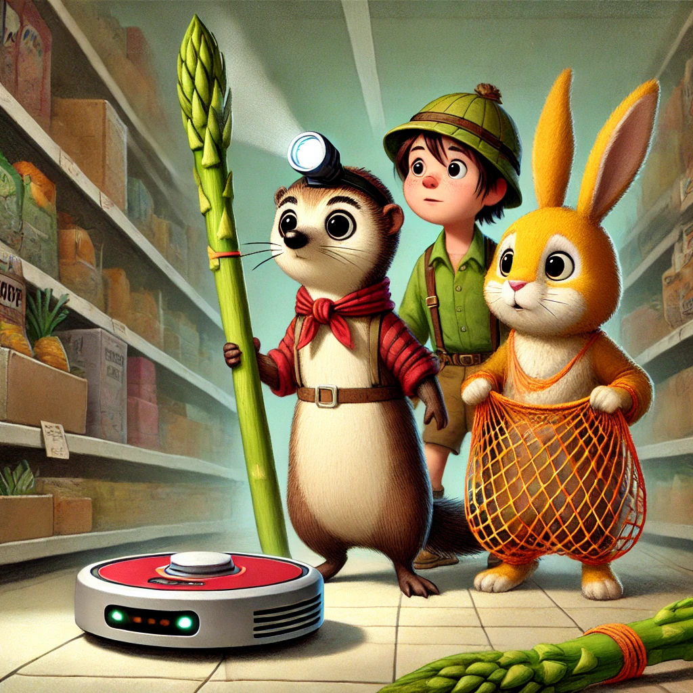
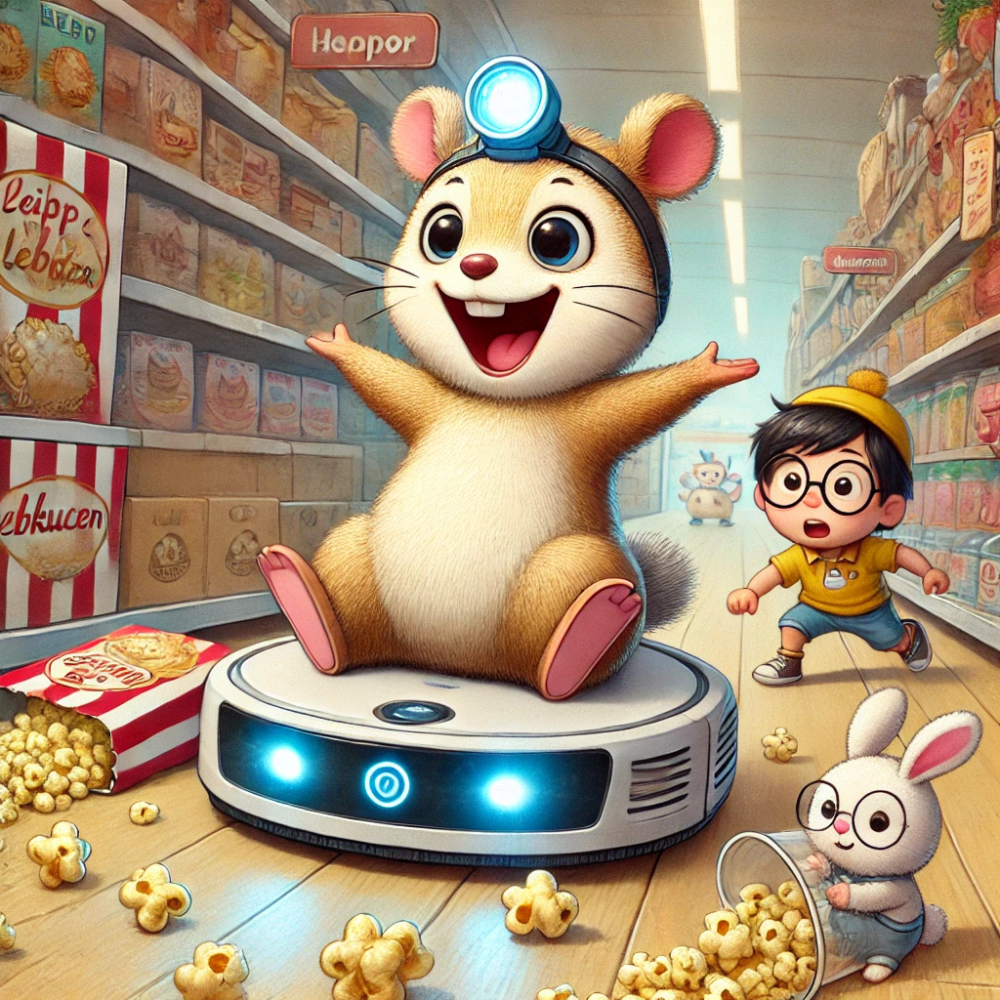

Es war einmal ein Wiesel namens Winnie, das oben auf dem Knabbereienregal eines Supermarkts in Leknes auf den Lofoten wohnte. Eines Tages hörte Winnie ein ungewohntes Geräusch. Es kam näher, nur um dann wieder leiser zu werden. Es war ein andauerndes "Wuuuuuuuu". Sie hatte sich mit ihren beiden Freunden verabredet, und wartete etwas ungeduldig, als Biep aufgeregt um die Ecke stob: "Winnie, Winnie, du musst die das ansehen. Ein ganz seltsames Tier ist in den Supermarkt gezogen. Es berummt und scheint sehr sauer zu sein. Es stößt überall an und rennt wild durch den Supermarkt. Wir müssen etwas tun!"
Winnie folgte Biep zu einem Aussichtspunkt, der von Herrn Hase besetzt war. Unten in Gang sah Winnie das Tier: rund und groß und brummend zog es über dem Boden und rempelte ungestüm links und rechts ans Regal. "Wir brauchen einen Plan", forderte Herr Hase. "Ich schlage vor, wir gehen hinüber in den Obstbereich und knoten uns ein Fangnetz aus den Orangennetzen!"
Die beiden andern hielten das für einen ganz ausgezeichneten Vorschlag und so zogen die drei Wildtierfänger los, um ihre Ausstattung zusammenzustellen. Sie kamen nicht nur mit einem Netz sondern auch mit Helmen aus halben Orangenschalen und jeweils einem Spargel zurück, um das Biest auf Abstand zu halten.
Langsam pirschten sie sich von hinten an das wilde Tier heran. Biep und Herrn Hase hoben gleichzeitig das Netz an und rannten vorwärts, links und rechts am Tier vorbei, ließen das Netz fallen und bogen jeweils ab, um so weit wie möglich Abstand zu gewinnen. Das Tier brüllte auf und versuchte weiterzurennen. Es hatte sich aber im Netz verfangen und wurde plötzlich still. Winnie stupste es mit ihrem Spargel vorsichtig an. Es gab keinen laut von sich. Sie umrundeten das Tier uns plötzlich sprach es: "Die Bürsten sind blockiert. Befreien um weiter zu saugen."
Winnie und Herr Hase sprangen zurück. Biep hingegen, der an der Kasse schon viel gehört und gesehen hatte, rief aus: "Aber das ist ja gar kein Tier. Das ist ein Staubsaugerroboter. Der macht nur sauber hier!" Er begann zu lachen und Winnie und Herr Hase stimmten nach einem Moment der Erholung ein. Die drei entwirrten das Netz, dass sich in den Bürsten des Roboters verfangen hatte und drückten den rot blinkenden Knopf. "Nehme das Saugen wieder auf." ertönte es und der Roboter lief los.
Die drei sahen dem Roboter ein wenig bei der Arbeit zu als Winnie begeistert vorschlug: "Lasst uns damit spielen!" Sie sprang auf den Rücken des Roboters und quiekte vor Vergnügen. Sie ritt durch die Regale. Danach war Biep dran. Herr Hase traute sich nicht, schlug aber vor: "Wir können auch verstecken spielen. Wer zuletzt vom Roboter gefunden wird, bekommt einen Lebkuchen!" Und schon zogen die drei los, um sich zu verstecken. Sie spielten den ganzen Tag und am Abend griffen sich alle drei einenLebkuchen. Es war schließlich die Adventszeit.